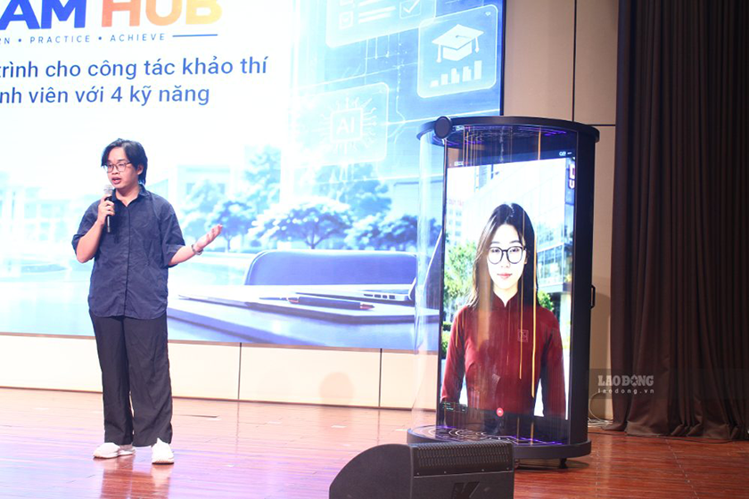

Đại học Duy Tân ra mắt hai sản phẩm AI phục vụ giáo dục
Chiều ngày 12.9, Đại học Duy Tân ra mắt hai sản phẩm trí tuệ nhân tạo do đội ngũ nhà trường tự nghiên cứu và phát triển: Hệ thống trợ lý AI tương tác thông minh HeyDT và Nền tảng Khảo thí ...